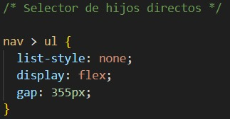

Selector universal
Este selector aplica un estilo a todos los elementos de la página.
Código CSS
En este caso a todos los elementos les apliqué la familia de fuentes de Times New Roman, ya que es mi fuente favorita.

Resultado
Se puede observar como tanto en párrafos, encabezados y listas se utiliza la misma fuente.
Selector de tipo (etiqueta)
Aplica el estilo a todas las etiquetas de un tipo específico, como p, h1, ul, etc.
Código CSS
Se aplica un color morado, cursiva y se alinea al centro a todos los h2 (2dos encabezados).
Resultado
Podemos observar como en los dos h2 de la página se le aplican las carácteristicas ya descritas anteriormente.
Selector por ID
Aplica el estilo al elemento que tenga el ID (que por obviedad un identificador debería de ser único, pero si se le aplica este ID a otro elemento, como en la imagen, podría solo aplicarse al primer elemento, pero depende del navegador.)
Código CSS
Se le aplicará negrita al elemento que tenga el ID: "n".
Resultado
A pesar de aplicarse en otros elementos, en este navegador (Edge) si aplicó para todos los elementos td.
Selector por clase
Aplica el estilo a todos los elementos que tengan una clase específica
Código CSS
En este caso solo necesitaba que un parrafo tuviera el color diferente, pero ya había aplicado un estilo para p (selector de etiqueta), por ende apliqué el selector de clase y la nombré bk (black).
Resultado
Se aplicó un color negro a todos los párrafos que tuvieran la clase bk.
Selector de atributo
Aplica el estilo a los elementos que tengan un atributo específico (ejemplo: alt, title, href, etc.).
Código CSS
En este caso lo que realiza esta clase es centrar la imagen.
Resultado
Todas las imagenes que tengan el atributo alt se centran.
Selector de lista
Aplica el mismo estilo a varios elementos listándolos separados por comas.
Código CSS
Aplica a todas las celdas ( etiquetas th y td) de una tabla tendrán un borde solido, texto alineado a la izquierda un espacio de 10px y un fondo azul.
Resultado
Podemos observar como se aplica el borde, la alineación, espacio y el fondo de la celda.
Selector de descendientes
Aplica el estilo a un elemento que está dentro de otro (no importando si es hijo directo o más profundo).
Código CSS
selecciona todos los "a" que estén dentro de un "nav", donde se le quita el subrayado al enlace, se le cambia el color y le aplica negrita.
Resultado
Selector de hijos directos
Aplica el estilo solo a los hijos directos de un elemento.
Código CSS
selecciona solo los ul que son hijos directos de un nav, en donde se le quita los puntos o numeros de la lista, y convierte la lista en un contenedor flexible para despues poner un espaciado de 335px.
Resultado
Se ven las propiedades aplicadas.

Selector hermano adyacente
Aplica el estilo al elemento que está justo después de otro elemento, en el mismo nivel.
Código CSS
Se le aplica el estilo a la primer tabla siempre y cuando esté después de un h2, el ancho será un 80% de la página y se aplica un margen vertical de 20px arriba y abajo y el margen será automatico en ambos lados, centrando la tabla.
Resultado
Selector hermano general
Aplica el estilo a todos los elementos que estén después de otro, en el mismo nivel, no necesariamente inmediato.
Código CSS
Se le aplica a todos los h2 después de un hr, en este caso se le aplica una sombra.
Resultado